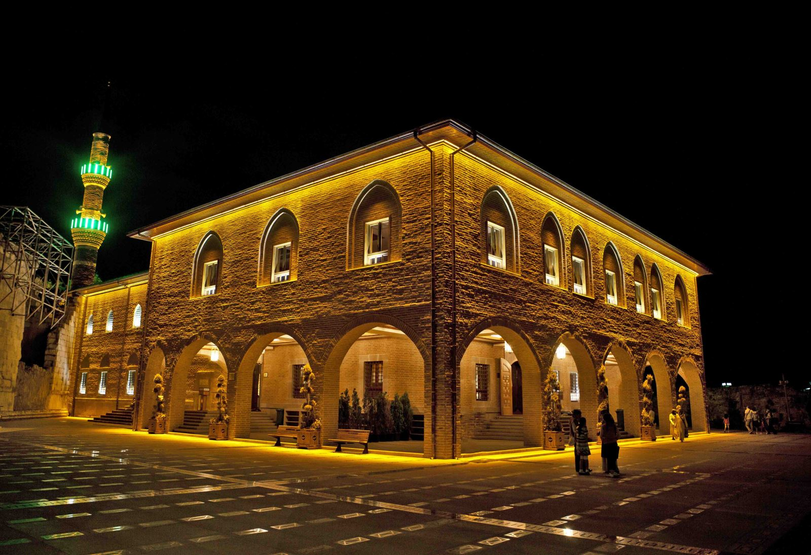
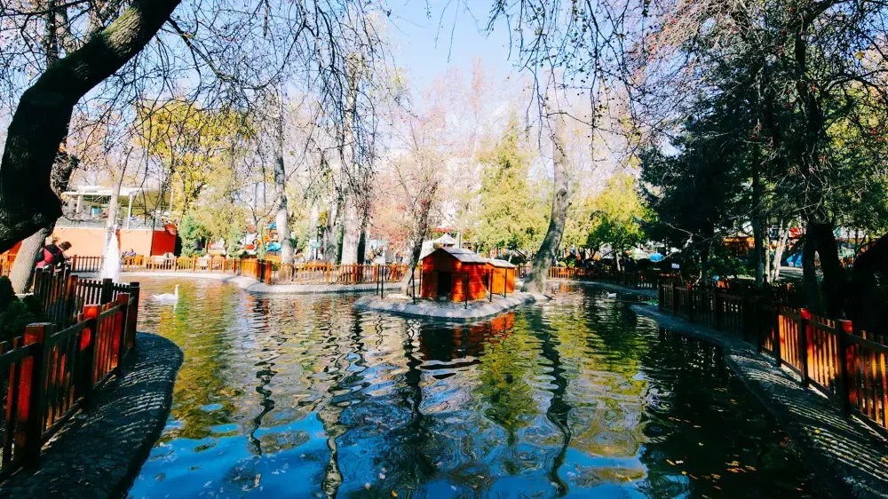
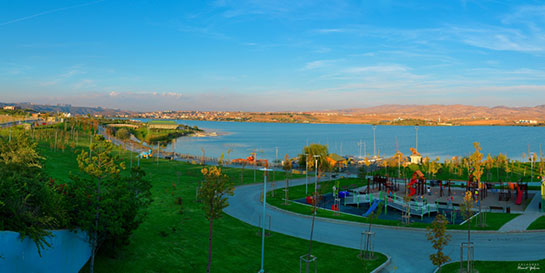
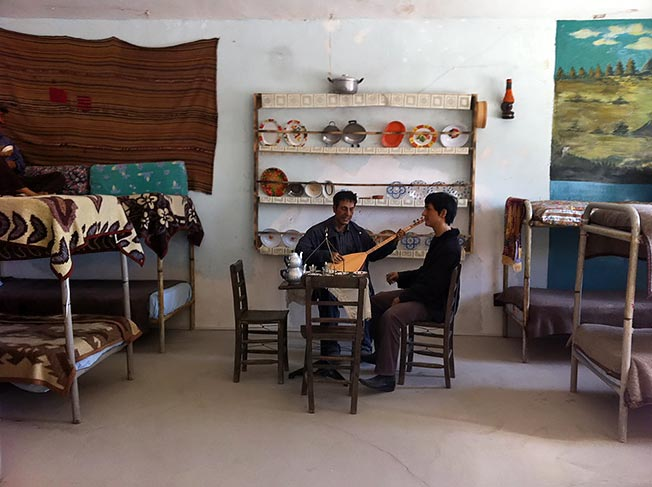
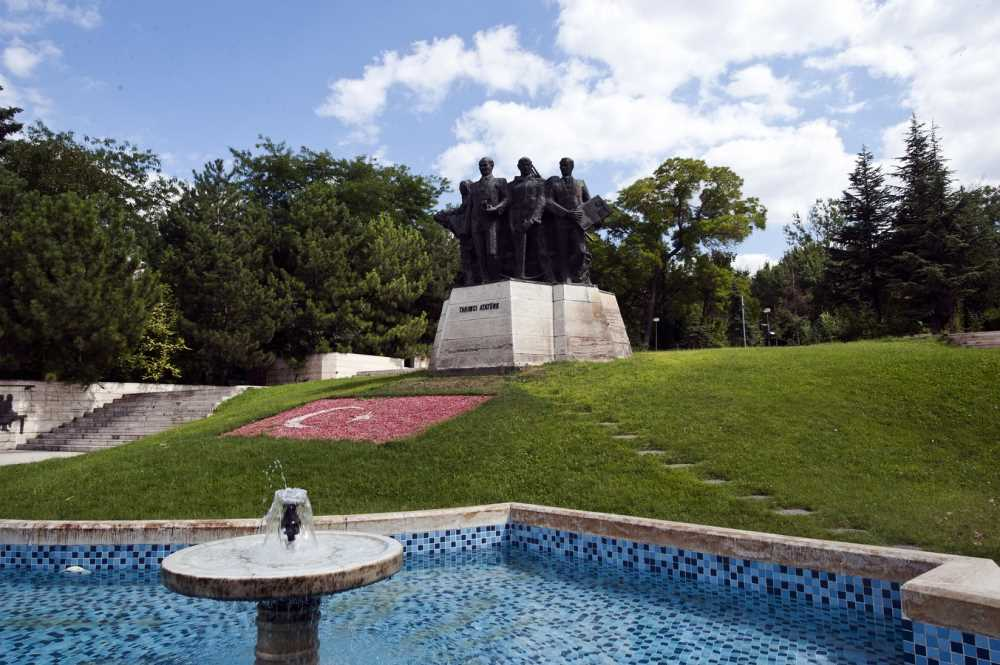
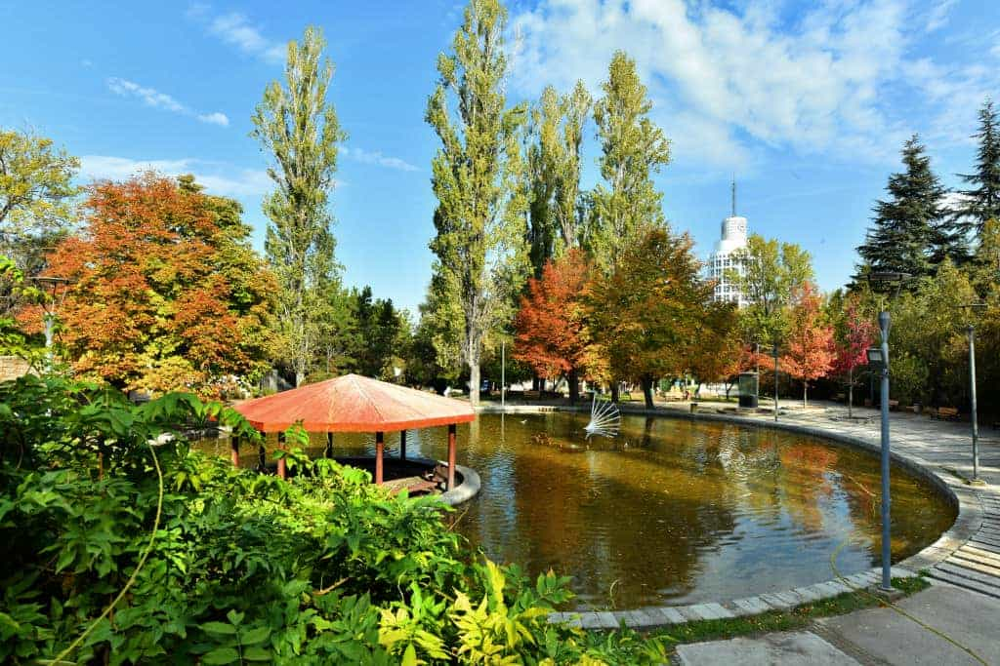
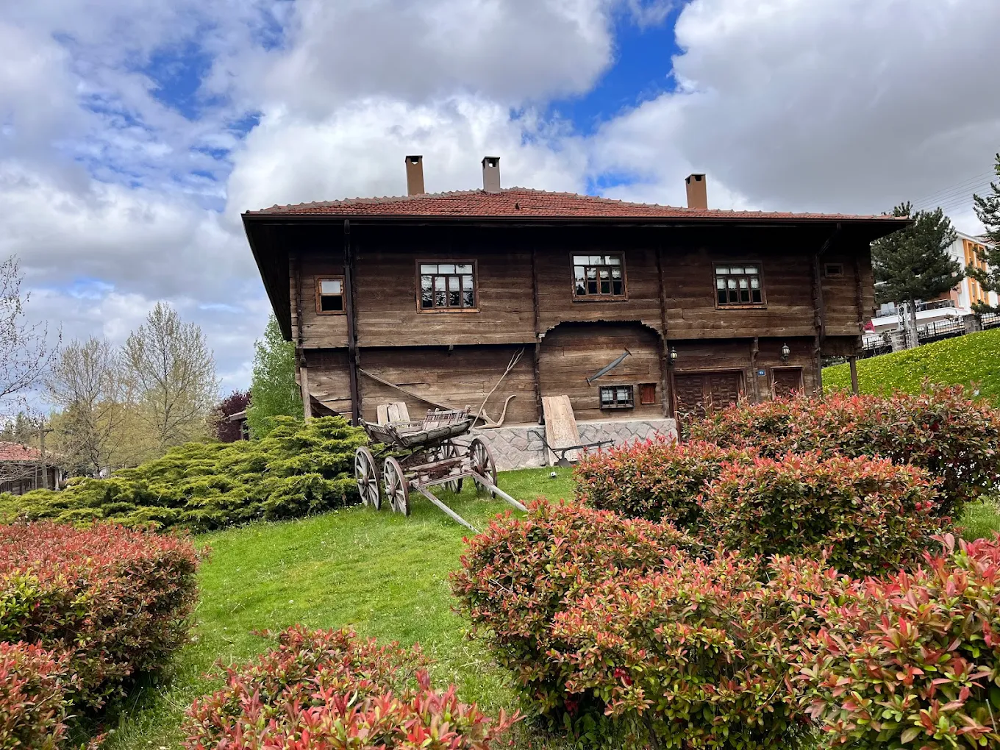

Ankara, sadece Türkiye’nin başkenti değil, aynı zamanda tarihin, kültürün ve modernliğin bir araya geldiği özel bir şehir. Binlerce yıllık geçmişiyle, Antik Roma'dan Selçuklu İmparatorluğu’na kadar birçok medeniyete ev sahipliği yapmış olan Ankara, günümüzde hızla gelişen bir metropol olarak da dikkat çekiyor. Zengin kültürel mirası, tarihi yapıları ve modern yaşam alanlarıyla her adımda yeni bir keşif sunan Ankara, aynı zamanda Türkiye'nin siyasi ve idari merkezi olma özelliğini taşıyor. Ulu Önder Mustafa Kemal Atatürk'ün hayatının önemli bir kısmını geçirdiği bu şehir, Anıtkabir gibi tarihi yapılarıyla da öne çıkmaktadır. Geniş caddeleri, yeşil alanları ve dinamik atmosferi ile Ankara, her türden gezgin için keşfedilecek çok şey sunuyor. Doğal güzellikleri, müzeleri, sanat galerileri, tiyatroları ve alışveriş merkezleriyle her yaşa hitap eden bir şehir olan Ankara, sizi tarihten modern zamanlara kadar büyüleyici bir yolculuğa davet ediyor.
Anıtkabir: Atatürk’ün anıt mezarı ve Türkiye Cumhuriyeti'nin kurucusuna duyulan saygının simgesi. Kocatepe Camii: İslam dünyasının önemli yapılarından biri olan bu camii, mimarisiyle büyüleyici. Atakule: Şehri kuş bakışı izleyebileceğiniz eşsiz bir manzara sunuyor. Gençlik Parkı ve Çıkrıkçızade Parkı: Doğayla iç içe olabileceğiniz, dinlenebileceğiniz yeşil alanlar. Tunali Hilmi Caddesi: Alışverişin ve sosyal hayatın kalbinin attığı cadde. Atatürk Orman Çiftliği ve Hayvanat Bahçesi: Şehirden kaçıp doğal bir ortamda huzurlu bir gün geçirebileceğiniz harika bir yer. Bahçelievler 7. Cadde: Alışverişin ve eğlencenin adresi, gençlerin buluşma noktası. Roma Hamamı: Antik Roma dönemine ait bu tarihi yapılar, ziyaretçilere geçmişi bir adım daha yakın hissettiriyor. Müze Turu: Türk ve İslam Eserleri Müzesi, Oyuncak Müzesi, Türk Tarih Kurumu gibi birçok farklı alanda zengin koleksiyonlar sunan müzeler Ankara’da sizi bekliyor.
📜 Hacı Bayram-ı Veli Kimdir? Doğum: 1352, Ankara (Solfasol Köyü) Vefat: 1430, Ankara Gerçek adı: Numan bin Ahmed Unvanı: Hacı Bayram-ı Veli, büyük bir mutasavvıf ve alimdir. Anadolu'da Bayramiyye Tarikatı’nı kurmuştur. Halkın dilinden anlayan, sade ve samimi bir derviş olarak tanınır. Osmanlı padişahı II. Murad tarafından da saygı görmüştür. Talebelerinden biri, ünlü Fatih Sultan Mehmet'in hocası olan Akşemseddin’dir. 🕌 Hacı Bayram Camii Hakkında Yapım Yılı: 1427–1428 Yaptıran: Hacı Bayram-ı Veli ve talebeleri Konumu: Ankara Ulus semtinde, Augustus Tapınağı’nın hemen yanında Özellikleri: Osmanlı mimarisinin sade örneklerindendir. Ahşap işçiliği, minberi ve kalem işleri oldukça dikkat çekicidir. Hacı Bayram-ı Veli’nin türbesi caminin hemen yanındadır. Ankara’nın en çok ziyaret edilen dini ve turistik mekânlarından biridir. 🌟 Neden Önemli? Ankara'nın manevi sembolüdür. Hem yerli hem yabancı turistler tarafından sıkça ziyaret edilir. Yanında Roma döneminden kalan Augustus Tapınağı ile tarihi dokuların buluştuğu nadir bir yerdir. Ramazan, kandil geceleri ve bayramlarda çok kalabalık olur.
Oyuncak Müzesi, Ankara'nın en ilginç ve renkli müzelerinden biridir. 2005 yılında Sunay Akın tarafından kurulan
bu
müze, dünya genelinden toplanan tarihi ve kültürel değer taşıyan oyuncaklarla ziyaretçilerini buluşturuyor.
İşte Oyuncak Müzesi hakkında daha fazla bilgi:
Konum
Adres: İsmail Gaspıralı Sokak No: 1, Gazi Mahallesi, Ankara
Müze, Ankara'nın Altındağ ilçesinde yer alır ve şehrin merkezi bölgelerinden ulaşımı oldukça kolaydır.
Koleksiyon
Müzede 1900'lü yıllardan günümüze kadar çeşitli dönemlere ait binlerce oyuncak sergilenmektedir. Oyuncaklar,
dönemin
kültürünü ve toplumsal yapısını yansıtan önemli eserlerdir.
Oyuncaklar arasında tahta, metal, bez, plastik gibi farklı malzemelerle yapılmış figürler bulunur. Bazı
oyuncaklar,
eski zamanların zamanına ait kültürleri anlatan unsurlar taşır.
Ayrıca, dünya çapında ünlü figürler ve komik karakterler içeren oyuncaklar da koleksiyonda yer alır.
Ziyaretçi Deneyimi
Oyuncak Müzesi, sadece çocuklar için değil, aynı zamanda yetişkinler için de eğitici ve nostaljik bir deneyim
sunar.
Çocuklar, oyuncaklarla oyunlar oynayarak eğlenceli bir gün geçirebilirken, yetişkinler geçmişe dair anılarını
tazeleyebilirler.
Müze, çocuklara tarih boyunca oyuncakların nasıl evrildiğini ve geçmişteki kültürel öğeleri öğreten bir eğitim
alanı
da sağlar.
Sergiler ve Etkinlikler
Müze, geçici sergiler ve etkinlikler düzenler. Bu etkinliklerde genellikle oyuncak yapım atölyeleri, oyuncak
tarihinin anlatıldığı sunumlar ve çocuklar için interaktif oyunlar yapılır.
Tarihi Değer
Sunay Akın, müzenin kurucusu olarak, koleksiyonunun yalnızca eğlencelik değil, aynı zamanda tarihi bir değer
taşıması gerektiğine inandığı için oldukça özverili bir çalışma yapmıştır. Müzenin koleksiyonuna dair her oyuncak
bir hikaye anlatır.
Öne Çıkan Özellikler
Müze, sadece eski oyuncakları sergilemekle kalmaz, aynı zamanda bu oyuncakların gerçek yaşamda nasıl
kullanıldığını
ve çocuklar üzerindeki etkilerini de anlatır.
Oyuncaklar arasında eski bebekler, tahta arabalar, porselen figürler, asker figürleri, kuklalar ve daha fazlası
bulunur.
Ziyaret Saatleri
Müze, genellikle haftanın her günü açıktır. Ancak özel tatil günlerinde veya etkinliklerde saatler değişebilir, bu
yüzden önceden arayıp saatleri kontrol etmekte fayda vardır.
Giriş Ücreti
Müzenin giriş ücreti oldukça uygundur ve her yaştan ziyaretçiye açıktır. Öğrencilere ve çocuklara indirimli
tarifeler uygulanabilir.
Oyuncak Müzesi, hem geçmişe yolculuk yapmak hem de geçmişin eğlenceli dünyasıyla tanışmak isteyenler için keyifli
bir mekan sunuyor. Eğer Ankara'ya yolunuz düşerse, ziyaret edilecek harika bir durak olacaktır!
Tunali Hilmi Caddesi: Ankara’nın Sosyal Kalbi Ankara'nın en canlı caddelerinden biri olan Tunali Hilmi Caddesi, şehrin sosyal yaşamının tam ortasında yer alır. Hem yerli halkın hem de ziyaretçilerin favori mekanlarından biri olan bu cadde, özellikle gençlerin buluşma noktasıdır. Alışveriş yapmak, kafe ve restoranlarda vakit geçirmek veya sokak sanatçılarını izlemek için mükemmel bir yerdir. Tunali Hilmi Caddesi, Kocatepe Camii ile Kızılay Meydanı arasında yer alır ve şehrin en merkezi noktalarından biri olarak bilinir. Yürüyüş yaparken karşılaştığınız çeşitli mağazalar, kafeler ve restoranlar sayesinde alışveriş ve eğlenceyi bir arada yaşayabilirsiniz. Alışveriş ve Eğlence Caddesi Cadde boyunca birçok giyim mağazası, kitapçılar, elektronik dükkanları ve hediyelik eşya satan yerler bulunur. Tunali Hilmi Caddesi, hem yerli markalar hem de uluslararası markalar için popüler bir alışveriş merkezidir. Bu caddeyi ziyaret ettiğinizde, alışveriş yapmanın yanı sıra Kafeler Sokağı'nı keşfederek hem lezzetli bir içecek içebilir hem de sosyal hayatın tadını çıkarabilirsiniz. Sosyal ve Kültürel Aktivitelere Ev Sahipliği Yapıyor Tunali Hilmi Caddesi'ne adım attığınızda, sokak sanatçılarının performanslarına, çeşitli kültürel etkinliklere ve canlı müzik dinletilerine rastlayabilirsiniz. Ayrıca caddenin sonunda bulunan TCDD Demiryolu Müzesi gibi ilginç mekanları da ziyaret edebilirsiniz. Her adımda farklı bir keşif, farklı bir deneyim sizi bekliyor. Yemek Molası ve Gece Hayatı Tunali Hilmi Caddesi’nde yemek yenebilecek çok sayıda mekan bulunur. Özellikle fast food zincirleri, Türk mutfağının lezzetleri ve modern restoranlar bu caddede bir arada yer alır. Gece hayatı da oldukça canlıdır; caddede bulunan barlar, kafeler ve eğlence mekanları, özellikle akşam saatlerinde gençlerin yoğun ilgi gösterdiği yerlerdir. Ulaşım ve Merkezî Konum Tunali Hilmi Caddesi'ne ulaşım oldukça kolaydır. Kızılay Meydanı'na oldukça yakın olması, toplu taşıma araçlarının bu caddeyi sıkça geçmesi sayesinde, şehri gezmek isteyenler için büyük bir avantaj sağlar. Metro ve otobüs hatları sayesinde Tunali Hilmi Caddesi'ne kolayca ulaşabilirsiniz.

Kuğulu Park: Ankara’nın Doğal Cenneti Ankara'nın kalbinde, şehrin yoğunluğundan uzaklaşabileceğiniz huzurlu bir yer arıyorsanız, Kuğulu Park tam size göre! Tunali Hilmi Caddesi'ne oldukça yakın bir konumda yer alan bu park, adını içinde barındırdığı zarif kuğulardan alır. Şehirde doğayla iç içe olabileceğiniz nadir alanlardan biri olan Kuğulu Park, sakin bir yürüyüş yapmak veya sadece dinlenmek isteyenler için ideal bir yerdir. Doğal Güzellikler ve Kuğular Kuğulu Park, içinde barındırdığı gölet ve kuğularla ünlüdür. Bu gölette yüzlerce kuğu, ördek ve çeşitli su kuşları yaşar. Göl kenarında yürürken kuğuların su üzerinde süzüldüğünü görmek, ziyaretçilere adeta bir doğa harikası sunar. Parkın çevresi ise yemyeşil çimenler, ağaçlar ve rengarenk çiçeklerle bezeli olup, her mevsim farklı güzellikler sunar. Sakin Bir Atmosfer Kuğulu Park, yoğun şehir yaşamından bir nebze uzaklaşmak isteyenler için bir dinlenme cennetidir. Özellikle yaz aylarında şehrin sıcak havasından bunalanlar, bu parkta gölgelik alanlarda oturabilir, çimenler üzerinde piknik yapabilir veya sadece parkın huzurlu atmosferinin tadını çıkarabilir. Ayrıca, parktaki banklarda oturup kitap okumak veya arkadaşlarınızla sohbet etmek için mükemmel bir ortam sunar. Tarihi ve Kültürel Zenginlik Kuğulu Park sadece doğal güzellikleriyle değil, aynı zamanda çevresindeki tarihi yapılarıyla da dikkat çeker. Parkın hemen yanında bulunan TCDD Demiryolu Müzesi gibi kültürel mekanlara da kolayca ulaşılabilir. Ayrıca, parkın etrafında bulunan kafelerde oturabilir, çay içebilir ve çevredeki tarihi yapıları keşfetmek için kısa bir yürüyüş yapabilirsiniz. Eğlenceli ve Aile Dostu Bir Yer Kuğulu Park, sadece doğa severler için değil, aileler için de harika bir yerdir. Çocuklar, parkın oyun alanlarında oynayabilir, kuğuları izleyebilir ve doğayla iç içe vakit geçirebilir. Ayrıca, parkta düzenlenen küçük etkinlikler ve konserler de zaman zaman ziyaretçilerin ilgisini çeker. Ulaşım ve Merkezî Konum Kuğulu Park, Ankara'nın merkezi bir noktasında yer aldığı için ulaşım oldukça kolaydır. Tunali Hilmi Caddesi'ne oldukça yakın olup, Kızılay Meydanı'na yürüme mesafesindedir. Metro ve otobüs gibi toplu taşıma araçlarıyla kolayca ulaşılabilir.
Gençlik Parkı: Ankara'nın Huzur Dolu Yeşil Alanı Ankara'nın merkezi noktalarından birinde, şehrin karmaşasından uzaklaşabileceğiniz ve doğanın keyfini çıkarabileceğiniz yerlerden biri olan Gençlik Parkı, hem dinlenmek hem de çeşitli etkinliklere katılmak isteyenler için mükemmel bir destinasyon. Şehirdeki en büyük park alanlarından biri olan Gençlik Parkı, sunduğu doğal güzellikler ve sosyal olanaklar ile her yaşa hitap eder. Doğanın İçinde Sakin Bir Atmosfer Gençlik Parkı, geniş yeşil alanları, göletleri ve yürüyüş parkurlarıyla öne çıkar. Parkın içinde yürüyüş yapabilir, bisiklet sürebilir veya sadece banklarda oturup parkın sakin atmosferinin tadını çıkarabilirsiniz. Bu park, ziyaretçilerine şehre özgü stresli yaşamdan bir kaçış noktası sunar ve doğal güzellikleriyle huzurlu bir ortam yaratır. Gölet ve Su Elementi Parkın en dikkat çeken özelliklerinden biri, içinde barındırdığı gölettir. Göletteki su kuşları, ördekler ve diğer hayvanlar parkın sakinliğini arttıran unsurlar arasındadır. Parkın gölet etrafında yürüyüş yapabilir veya banklarda oturup manzaranın tadını çıkarabilirsiniz. Gölet çevresindeki yeşil alanlar da piknik yapmaya uygun geniş alanlar sunar. Sosyal Alanlar ve Aktivite İmkanları Gençlik Parkı, sadece doğal güzellikleriyle değil, sunduğu sosyal olanaklarla da dikkat çeker. Parkta çeşitli spor alanları, çocuk oyun parkları ve açık hava etkinlikleri yapılabilecek geniş alanlar bulunur. Ayrıca, yaz aylarında parkta konserler, tiyatro gösterileri ve çeşitli etkinlikler düzenlenir. Bu da Gençlik Parkı’nı sosyal aktivitelerle dolu bir yaşam alanı haline getirir. Tarihi Zenginlikler Gençlik Parkı, sadece doğal güzelliklere sahip değil, aynı zamanda tarihsel açıdan da önemli bir konumdadır. Park, çok sayıda tarihi yapıya yakın bir alanda yer alır. Yakınında bulunan Ankara Devlet Tiyatrosu ve Opera Binası gibi kültürel alanlar da ziyaretçilerin ilgisini çeker. Gençlik Parkı, şehri keşfedenler için sadece doğa ile iç içe bir alan değil, aynı zamanda kültürel bir gezinti fırsatı sunar. Aile Dostu Bir Yer Gençlik Parkı, aileler için harika bir destinasyon sunar. Çocuklar için güvenli oyun alanları ve geniş yeşil alanlar, ailelerin rahatça vakit geçirmesini sağlar. Ailece yapılacak piknikler veya sadece parkta geçirilen keyifli bir gün, her yaştan ziyaretçiye hitap eder. Eğlence ve Dinlenme Bir Arada Gençlik Parkı'nda, sadece dinlenmekle kalmaz, aynı zamanda eğlenceli etkinliklere katılabilirsiniz. Gençlik Parkı, şehrin sosyal merkezlerinden biri olarak her yaştan insanın vakit geçirebileceği çeşitli mekanlar ve aktiviteler sunar. Ayrıca, parkta yer alan kafelerde bir kahve içebilir veya çocuklarınızla eğlenceli bir gün geçirebilirsiniz. Ulaşım Kolaylığı Gençlik Parkı, Ulus ve Kızılay'a oldukça yakın bir mesafede yer alır. Şehre ulaşım oldukça kolaydır ve çeşitli toplu taşıma araçlarıyla parka kolayca ulaşabilirsiniz. Park, şehre gelen turistler ve Ankara sakinleri için merkezi bir lokasyon sunar.

Nallıhan Kuş Cenneti: Doğanın Büyüleyici Yüzü Nallıhan Kuş Cenneti, Ankara'nın Nallıhan ilçesinde bulunan ve doğa severler ile kuş gözlemcileri için harika bir destinasyondur. Burası, pek çok kuş türüne ev sahipliği yapan ve Türkiye’nin en önemli kuş gözlem alanlarından biri olarak bilinir. Hem doğa hem de yaban hayatı severlerin ilgisini çekecek eşsiz bir yerdir. Doğanın Kalbi: Nallıhan Kuş Cenneti Nallıhan Kuş Cenneti, 1950’lerin sonunda kurulmuş olan ve 1988 yılında milli park statüsü kazanmış bir alandır. Tuz Gölü'nün kuzey doğusunda yer alan bu bölge, özellikle göçmen kuşlar için önemli bir geçiş noktasıdır. Nallıhan Kuş Cenneti, göç mevsiminde binlerce kuşun uğrak yeri haline gelir ve çeşitli kuş türlerini gözlemlemek için eşsiz bir fırsat sunar. Biodiversite ve Kuş Çeşitliliği Kuş cenneti, 100'ün üzerinde kuş türüne ev sahipliği yapmaktadır. Bu alanda en sık karşılaşılan kuş türlerinden bazıları; karatavuklar, leylekler, yaban ördekleri, akbaba, doğancı kuşu, bıldırcın ve bozkır kuyruksallarıdır. Ayrıca, nadir bulunan pelikan gibi büyük kuşların da geçiş yaptığı ve beslendiği bir alan olma özelliğine sahiptir. Nallıhan Kuş Cenneti, aynı zamanda çeşitli yırtıcı kuş türlerine de ev sahipliği yapar. Göçmen kuşların yanı sıra, bu alanda yıl boyunca yaşayan yerli kuş türleri de bulunmaktadır. Kuş gözlemcileri ve doğa severler için mükemmel bir kuş gözlem alanı oluşturur. Büyüleyici Doğal Peyzaj Nallıhan Kuş Cenneti'nin doğası, sadece kuş gözlemcileri için değil, doğa tutkunları için de oldukça etkileyicidir. Geniş çayırlar, sulak alanlar, sazlıklar ve ağaçlık bölgeler, bu alanın doğal güzelliklerini oluşturur. Bu parkta yürüyüş yaparken, etrafınızdaki doğal güzelliklerin tadını çıkarabilirsiniz. Aynı zamanda bu alanda fotoğrafçılar için harika manzaralar sunulmaktadır. Kuş Gözlemciliği ve Ekoturizm Kuş cennetinde gözlem yapabilmek için belirli bir gözlem alanı da bulunmaktadır. Gözlemciler, burada kuşların göçlerini izleyebilir ve doğanın tadını çıkarabilirler. Bunun yanı sıra, ekoturizm amaçlı ziyaretçilere çeşitli geziler ve rehberli turlar da sunulmaktadır. Bu turlar sayesinde, uzmanlar eşliğinde bölgedeki kuşları ve doğal yaşamı daha yakından keşfetmek mümkün olur. Bir Cennet için Ulaşım Nallıhan Kuş Cenneti, Ankara'ya yaklaşık 150 km mesafede yer almaktadır ve rahatça ulaşılabilecek bir konumda bulunur. Kendi aracınızla veya toplu taşıma araçlarıyla bu bölgeye ulaşmak mümkündür. Ayrıca, doğal yaşamı ve kuşları gözlemlemek için yaz ve sonbahar ayları oldukça uygun bir zamandır. Ziyaret Edilebilecek Alanlar Kuş cennetini ziyaret etmek için en iyi zaman ilkbahar ve sonbahar aylarıdır çünkü bu dönemde göçmen kuşlar yoğun olarak bu alanda bulunur. Parkta, gözlem kuleleri ve gezinti alanları gibi ziyaretçilerin rahatça dolaşabileceği alanlar mevcuttur. Ayrıca, bölgedeki sazlık alanlar ve göletler kuşların beslenme alanlarıdır, bu yüzden sık sık kuş gözlemleyebilirsiniz. Sonuç Olarak: Doğal Cennetin Kapılarını Aralayın Eğer siz de doğa ile iç içe olmak ve göçmen kuşları yakından gözlemlemek isterseniz, Nallıhan Kuş Cenneti harika bir seçenek olacaktır. Bu eşsiz alan, doğa severler ve kuş gözlemcileri için keşfedilmesi gereken bir hazine gibidir. Ayrıca, burası yalnızca kuş gözlemcileri için değil, doğa yürüyüşleri yapmayı seven herkes için ideal bir mekan sunmaktadır. Gezilecek Yerler: Gözlem Kuleleri: Kuşların daha rahat gözlemlenebilmesi için inşa edilmiştir. Sazlık Alanlar: Kuşların dinlenme ve beslenme alanlarıdır. Yürüyüş Parkurları: Doğayla iç içe yürüyüş yapabileceğiniz alanlardır. Ne Zaman Gitmeli? Yaz ve Sonbahar Ayları: Göçmen kuşların en yoğun olduğu dönemlerdir.
Mogan Gölü: Doğanın Sakin Cenneti Mogan Gölü, Ankara'ya yaklaşık 25 km mesafede bulunur ve şehre yakın konumuyla özellikle hafta sonları kaçamak yapmak isteyenler için popüler bir yerdir. Göl, doğal yapısı ve sakin atmosferiyle, özellikle doğa severlerin ilgisini çeker. Doğal Zenginlikler ve Kuş Gözlemciliği Mogan Gölü, yaban hayatı açısından oldukça zengindir. Göl çevresi, kuş gözlemcileri için mükemmel bir alan sunar. Yaz aylarında göçmen kuşlar, kış aylarında ise yerli kuşlar bu gölde yaşamaya devam eder. Flamingo, ördekler, karatavuklar ve yaban ördekleri gibi kuşlar, gölde sıkça görülebilir. Özellikle kuş gözlemcileri için Mogan Gölü, eşsiz bir deneyim sunar. Göl Manzarası ve Peyzaj Mogan Gölü, çevresindeki doğal peyzajla göz kamaştırır. Gölün etrafı, yeşil alanlar, ormanlık bölgeler ve göllerle çevrili manzaralar ile tamamlanır. Sakin suları ve etrafındaki ağaçlar, ziyaretçilerine huzurlu bir atmosfer sunar. Özellikle gölde yapılan tekne turları veya göl çevresindeki yürüyüş parkurları, doğa ile iç içe olmak isteyenler için harika fırsatlar sunar. Piknik ve Dinlenme Alanları Göl çevresinde, piknik alanları ve dinlenme parkurları yer alır. Aileler, arkadaş grupları ya da yalnız başına gelen doğa severler, Mogan Gölü çevresinde dinlenebilir, doğanın tadını çıkarabilirler. Piknik yapmak için ideal olan bu bölgede, barbekü alanları da bulunmaktadır. Su Sporları ve Aktivite Seçenekleri Mogan Gölü'nde çeşitli su sporları yapabilirsiniz. Kano, balık tutma veya suziki gibi etkinlikler ile suyun keyfini çıkarabilirsiniz. Ayrıca gölde yüzme yapmak da mümkündür, ancak suyun derinliği yer yer değişiklik gösterdiği için dikkatli olunmalıdır. Mogan Gölü'nde Gezilecek Yerler Göl çevresindeki yürüyüş parkurları: Doğal güzelliklerin tadını çıkarabileceğiniz ve manzarayı seyredeceğiniz yürüyüş rotaları. Yürüyüş ve koşu alanları: Spor yapmak isteyenler için özel olarak ayrılmış alanlar. Yerli restoranlar ve kafeler: Göl kenarında, doğa ile iç içe yemek yiyebileceğiniz mekanlar. Mogan Gölü'ne Nasıl Ulaşılır? Mogan Gölü, Ankara şehir merkezine oldukça yakın bir mesafede olduğu için kolayca ulaşılabilir. Kendi aracınızla, toplu taşıma araçlarıyla ya da özel turlar ile Mogan Gölü’ne gitmek mümkündür. Eğer aracınız varsa, Gölbaşı ilçesinin merkezinden 10-15 dakika mesafede olan bu göle rahatlıkla ulaşabilirsiniz. Ziyaret İçin En İyi Zaman Yaz ve Sonbahar: Göçmen kuşların gölde yoğun olduğu dönemlerdir. Ayrıca doğanın yeşil ve taze olduğu dönemde gölde yürüyüş yapmak oldukça keyifli olabilir. Kış: Kışın, gölde yerli kuşların yanı sıra göçmen kuşların da keyifli görüntüler oluşturduğu bir mevsimdir.
Ulucanlar Cezaevi: Tarihin Sıkı Kapıları Ulucanlar Cezaevi, 1925 yılında inşa edilmiştir ve yıllar boyunca Ankara'nın en önemli hapishanelerinden biri olarak hizmet vermiştir. Cezaevi, tarihsel olarak, siyasi tutukluların, düşünce suçlularının ve toplumun farklı kesimlerinden pek çok kişinin hapsedildiği bir yer olmuştur. Ulucanlar Cezaevi, Türkiye'nin toplum, siyaset ve kültür hayatında iz bırakan olaylarla özdeşleşmiş bir mekandır. Tarihi Dönemler ve Ünlü Tutuklular Ulucanlar Cezaevi, Türkiye'nin Cumhuriyet dönemi tarihinin önemli tanıklarından biridir. Siyasi tutuklular, sanatçılar ve yazarlar burada uzun yıllar hapis yatmışlardır. Bunlardan bazıları Nazım Hikmet, Yılmaz Güney, Hasan Cemal gibi ünlü isimlerdir. Bu isimlerin burada geçirdikleri zaman, cezaevinin kültürel ve toplumsal geçmişine dair önemli birer parça oluşturur. Ulucanlar Cezaevi ve Siyasi Yansıması Ulucanlar, düşünce özgürlüğü ve siyasi baskıların simgesi haline gelmiştir. Cezaevine giren birçok kişi, özgür düşüncelerinden ötürü ceza almış, toplumun farklı görüşlerine sahip kişiler burada yıllarını geçirmiştir. Cezaevinin kapalı duvarları, siyasi iklimin ve ideolojik çatışmaların güçlü bir sembolüdür. Cezaevi Müze Haline Geliyor 2009 yılında kapanan Ulucanlar Cezaevi, artık bir müze olarak ziyaretçilere açılmaktadır. Cezaevi, ziyaretçilere tarihi bir yolculuk yapma fırsatı sunar. Cezaevinin çeşitli hücreleri, mahkumların hayatları ve cezaevine dair objeler sergilenmektedir. Ziyaretçiler, hücreleri gezerek burada kalan tutukluların yaşam koşullarını gözlemleyebilir, cezaevinin siyasi ve toplumsal etkilerini daha yakından anlayabilirler. Müze İçerisinde Bulunan Bölümler: Hücreler: Eski mahkumların hayatını anlamak için önemli bir bölümdür. Yalnızlık, adalet ve acı gibi temalarla yoğrulmuş bir geçmişi gözler önüne serer. Tarihsel Sergiler: Cezaevinin kuruluşundan günümüze kadar olan dönemde yaşanan önemli olaylar ve tutuklu tarihi burada sergilenmektedir. Yazılı Belgeler ve Fotoğraflar: Nazım Hikmet ve Yılmaz Güney gibi önemli kişilerin buradaki yaşamlarına dair belgeler, fotoğraflar ve yazılar ziyaretçilere sunulmaktadır. Felsefi ve Psikolojik Alanlar: Mahkumların, cezaevinde yaşadıkları psikolojik ve duygusal zorluklara dair bilgilere yer verilmektedir. Ziyaretçi Deneyimi Ulucanlar Cezaevi'ni ziyaret edenler, sürükleyici ve derin bir deneyim yaşarlar. Cezaevinin havası, sadece eski yapıları ve koşullarıyla değil, aynı zamanda burası üzerinde yaşanan derin acılar ve toplumdaki etkileriyle de önemli bir tarihsel anlam taşır. Ziyaretçiler, özellikle duvarlar arasında yaşanan hüzünleri hissederek, toplumsal adalet, özgürlük ve insan hakları üzerine düşünmeye başlarlar. Nasıl Ulaşılır? Ulucanlar Cezaevi, Ankara şehir merkezine oldukça yakın bir mesafededir. Ulus ilçesindeki cezaevi, toplu taşıma ile kolayca ulaşılabilecek bir konumda yer alır. Ayrıca, özel araçlarla da ziyaret edilebilir. Müze olarak gezilmesi için belirli saatlerde açık olan Ulucanlar Cezaevi, hafta içi ve hafta sonu ziyaretçilere açıktır. Ziyaret Saatleri ve Giriş Ücreti Müze olarak açılan Ulucanlar Cezaevi’ni ziyaret etmek için genellikle hafta içi günlerde gitmek daha kolaydır. Giriş ücretleri ve ziyaret saatleri için Ulucanlar Cezaevi'nin resmi web sitesinden veya yerel turizm ofislerinden güncel bilgilere ulaşabilirsiniz.
🐄 Atatürk Orman Çiftliği Hakkında Kısa Bilgi Kuruluş yılı: 1925 Kurucusu: Mustafa Kemal Atatürk Amaç: Modern tarım tekniklerini halka göstermek, üretimi teşvik etmek ve halka açık bir yaşam alanı oluşturmak. 🌿 Neden Ziyaret Etmelisin? Doğayla iç içe vakit geçirmek için geniş yeşil alanlara sahip. Hayvanat bahçesi, süt fabrikası, bira fabrikası, balık havuzları, seralar ve piknik alanları gibi çok çeşitli bölümleriyle hem eğitici hem eğlencelidir. Türkiye’nin ilk organik tarım ve üretim örneklerinden biridir. Günümüzde nostaljik tren istasyonları, müze alanları ve açık hava gezinti yolları ile Ankara’nın ortasında nefes alabileceğiniz nadir yerlerdendir. 🍦 Ne Yapılır? AOÇ dondurması yemek (meşhurdur). Cam seralarda gezmek, organik sebze meyve alışverişi yapmak. Hayvanları ziyaret etmek – özellikle çocuklar için eğitici bir deneyim sunar. Atatürk Evi Müzesini gezerek çiftliğin tarihine ve Atatürk’ün vizyonuna tanıklık etmek. Ailece piknik yapmak, yürüyüş yollarında zaman geçirmek. 🗺️ Ulaşım Bilgisi Atatürk Orman Çiftliği, Ankara'nın merkezine oldukça yakın bir konumda bulunur. Toplu taşıma ile ulaşım kolaydır. Ulus, Sıhhiye veya Kızılay’dan hareket eden birçok otobüs ve minibüs hattı buradan geçmektedir. 🔍 Ekstra Bilgiler Atatürk Orman Çiftliği, zaman içinde bazı alanlarını kaybetmiş olsa da hâlâ Cumhuriyet dönemi tarım vizyonunun en önemli simgelerinden biridir. AOÇ’nin orijinal belgeleri, Atatürk’ün bu alanı Türk milletine bağışladığını göstermektedir.
🌳 Seğmenler Parkı Seğmenler Parkı, Ankara'nın en gözde semtlerinden biri olan Çankaya'da yer alan, şehir merkezine yakın konumuyla öne çıkan bir yeşil cennettir. Doğayla iç içe yürüyüş yapmak, dinlenmek veya arkadaşlarla keyifli vakit geçirmek isteyen Ankaralılar için popüler bir uğrak noktasıdır. 🍃 Parkın Özellikleri Geniş yeşil alanlar, ağaçlık yürüyüş yolları ve piknik yapmaya uygun oturma alanları bulunur. Seğmenler adını, Ankara ve çevresinde yaşayan Türk halk dansçılarından alır. Parkın içinde bu kültürel temaya ait heykeller ve görseller yer alır. Özellikle fotoğrafçılar, öğrenciler ve yürüyüş severler tarafından sıkça tercih edilir. Kuş sesleri, gölgeli yollar ve tertemiz hava, şehir hayatının stresinden uzaklaşmak için birebirdir. 🌆 Konumu ve Ulaşım Park, Kavaklıdere ve Çankaya arasında konumlanmıştır. Tunalı Hilmi Caddesi'ne yürüme mesafesinde olduğu için geziniz sırasında uğrayabileceğiniz çok ideal bir noktadır. Toplu taşıma ile de kolayca ulaşılabilir.
🏡 Altınköy Açık Hava Müzesi Altınköy Açık Hava Müzesi, Ankara’nın Altındağ ilçesinde yer alan ve şehir hayatının karmaşasından uzak, nostaljik bir köy atmosferi sunan eşsiz bir kültür ve tarih parkıdır. Burada geçmişe bir yolculuğa çıkabilir, geleneksel Türk köy hayatını birebir yaşayarak gözlemleyebilirsin. 🌾 Ne Görebilirsin? Aslına uygun köy evleri, taş fırınlar, değirmenler, ambarlar ve çeşmeler Köy kahvesi, bakkal, marangoz atölyesi ve geleneksel el sanatları atölyeleri Canlı hayvanlar (inekler, tavuklar, koyunlar vs.) ile adeta bir köy yaşantısı Çeşitli etkinlikler: Geleneksel düğünler, el sanatları atölyeleri, köy oyunları Yöresel kıyafetli görevliler ile gerçekçi bir zaman yolculuğu 🎓 Kültürel ve Eğitici Bir Deneyim Altınköy, yalnızca gezmek için değil; çocuklar, öğrenciler ve turistler için öğretici bir deneyim sunar. Geleneksel yaşamın izlerini sürmek, geçmişin gündelik hayatına tanıklık etmek için mükemmel bir ortam sağlar. 📍 Konum ve Ulaşım Altındağ ilçesi sınırlarında yer alır. Ankara merkezinden araçla 20-25 dakikada ulaşım sağlanabilir. Toplu taşıma ile de kolayca erişilebilir. 🎯 Neden Gitmelisin? Geçmişteki köy hayatını birebir yaşamak ve anlamak için Fotoğraf çekmek ve doğayla iç içe olmak için Ailece kaliteli zaman geçirmek ve çocuklara doğayı tanıtmak için Kültürel bir gezintiyle şehri farklı bir gözle görmek için
Yukarıdaki haritayı kullanarak rahatça yerleri bulun ve gezinin tadını çıkarın!